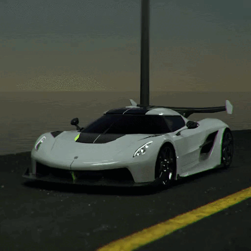

Характеристика
Технологии:
Jesko Absolut будет оснащаться двигателем V8 с двойным турбонаддувом мощностью 1280 л. с.
Самый лёгкий в мире коленчатый вал V8, который весит всего 12,5 кг.
Целевой коэффициент лобового сопротивления для Jesko Absolut составил 0,28 Кд.

Характеристики:
Максимальная скорость: 531 км/ч
Мощность: 1280 л/с
Прижимная сила: 250 км/ч
Страница 3